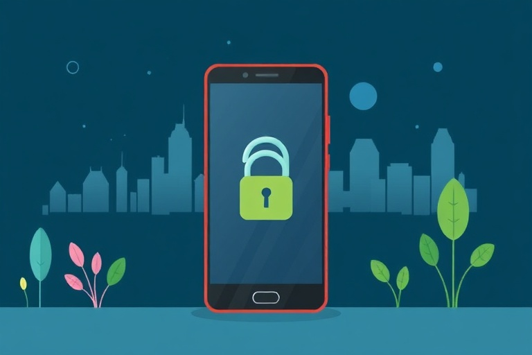

অ্যান্ড্রয়েড ফোনের গোপনীয়তা রক্ষা ও সুরক্ষার কয়েকটি সহজ টিপস

Category: mobile | Language: bnবর্তমান যুগে আমাদের স্মার্টফোনেই জমা থাকে ব্যক্তিগত ছবি, জরুরি নথি, ব্যাঙ্কের তথ্য এবং নানা মেসেজ। তাই অ্যান্ড্রয়েড ফোন সুরক্ষিত রাখা এখন অত্যন্ত জরুরি এক দায়িত্ব। অসাবধানতার কারণে বিভিন্ন অ্যাপ আমাদের ফোনের যাবতীয় তথ্যের নাগাল পেয়ে যেতে পারে, যা পরবর্তীকালে গোপনীয়তা লঙ্ঘনের কারণ হয়। তবে ফোনের অভ্যন্তরীণ কিছু সেটিংস সামান্য পরিবর্তন করলেই আপনি নিজের ব্যক্তিগত তথ্য সুরক্ষিত রাখতে পারবেন।
প্রথম এবং সবচেয়ে গুরুত্বপূর্ণ কাজ হল অ্যাপ পারমিশন বা অনুমতি নিয়মিত যাচাই করা। ফোনের 'সেটিংস' থেকে 'প্রাইভেসি' অপশনে গিয়ে 'পারমিশন ম্যানেজার' পরীক্ষা করুন। কোনো সাধারণ ক্যালকুলেটর বা গেম অ্যাপ যদি আপনার কন্টাক্টস, ক্যামেরা কিংবা মাইক্রোফোনের অনুমতি চেয়ে বসে, তবে সঙ্গে সঙ্গে তা বন্ধ করুন। লোকেশন, ক্যামেরা বা মাইকের ক্ষেত্রে সর্বদা 'হোয়াইল ইউজিং দ্য অ্যাপ' (While using the app) বিকল্পটি নির্বাচন করা বুদ্ধিমানের কাজ।
ফোনের ব্যাকগ্রাউন্ড লোকেশন ট্র্যাকিং নিয়ন্ত্রণ করা নিরাপত্তার পাশাপাশি ব্যাটারি বাঁচানোর ক্ষেত্রেও দারুণ কার্যকর। অনেক অ্যাপ বন্ধ থাকা অবস্থাতেও ব্যবহারকারীর গতিবিধির ওপর নজর রাখে। তাই ম্যাপ বা রাইড শেয়ারিংয়ের মতো জরুরি অ্যাপ ছাড়া বাকি সব অ্যাপের ক্ষেত্রে ব্যাকগ্রাউন্ড লোকেশন পারমিশন বন্ধ রাখুন। এর পাশাপাশি গুগলের লোকেশন হিস্ট্রি ও অ্যাক্টিভিটি কন্ট্রোল মাঝেমধ্যে পরীক্ষা করে অপ্রয়োজনীয় ট্র্যাকিং বন্ধ রাখা উচিত।
লকস্ক্রিন নোটিফিকেশনের সুরক্ষা নিশ্চিত করা আরেকটি জরুরি বিষয়। ফোন লক থাকা অবস্থাতেও স্ক্রিনে আসা ওটিপি (OTP) বা ব্যাঙ্ক মেসেজ যে কেউ দেখে নিতে পারে। এই ঝুঁকি এড়াতে সেটিংসে গিয়ে নোটিফিকেশন অপশন থেকে 'হাইড সেনসিটিভ কন্টেন্ট' চালু করে দিন। এর ফলে ডিসপ্লে আনলক না করা পর্যন্ত নোটিফিকেশনের ভেতরের গোপনীয় তথ্য বা ওটিপি কেউ পড়তে পারবে না।
অচেনা বা অনির্ভরযোগ্য কোনো ওয়েবসাইট থেকে এপিকে (APK) ফাইল ডাউনলোড করে ইনস্টল করা একেবারেই উচিত নয়। অ্যাপ নামানোর জন্য সর্বদা গুগল প্লে স্টোর ব্যবহার করুন এবং প্লে স্টোরের ভেতরে 'প্লে প্রোটেক্ট' ফিচারটি সব সময় সক্রিয় রাখুন। এছাড়া ফোন প্রস্তুতকারক সংস্থার পক্ষ থেকে পাঠানো সিকিউরিটি প্যাচ ও সফটওয়্যার আপডেট নিয়মিত ইনস্টল করুন, কারণ এই আপডেটগুলি সিস্টেমের নিরাপত্তার ফাঁকফোকর বন্ধ করতে সাহায্য করে।
পরিশেষে, ব্যাঙ্কিং অ্যাপ, ইউপিআই এবং ফটো গ্যালারির মতো সংবেদনশীল অ্যাপগুলির জন্য অতিরিক্ত সিকিউরিটি লক ব্যবহার করা প্রয়োজন। ফোনের সাধারণ স্ক্রিন লকের পাশাপাশি আলাদা অ্যাপ লক বা ফিঙ্গারপ্রিন্ট প্রোটেকশন চালু রাখলে ফোন ভুলবশত আনলক অবস্থায় অন্যের হাতে চলে গেলেও আপনার ব্যক্তিগত তথ্যে কেউ সহজে উঁকি দিতে পারবে না।